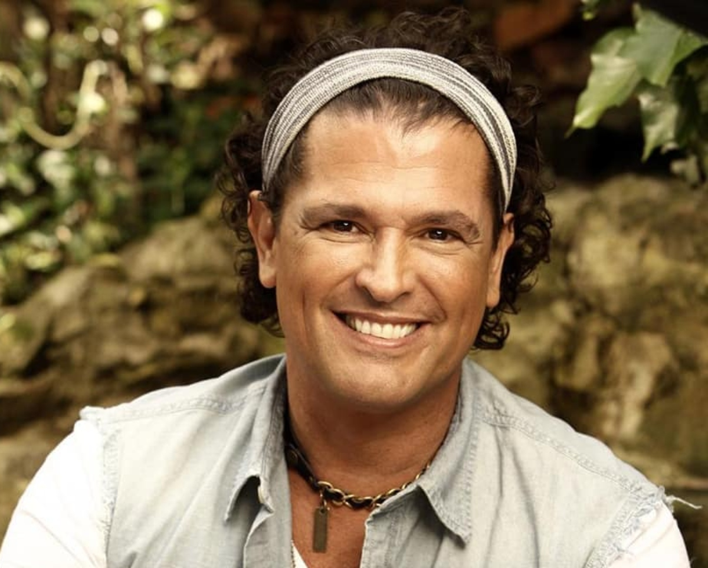

El Alma del Vallenato
Cuna del vallenato, Patrimonio Inmaterial de la Humanidad por la UNESCO desde 2015.
Festival de la Leyenda Vallenata

Festival de la Leyenda Vallenata
Celebrado cada abril desde 1968, es el festival folclórico más importante de Colombia. Miles de turistas llenan Valledupar para escuchar la mejor música vallenata en vivo, con concursos de acordeón, caja, guacharaca y canto.
© Wikimedia Commons

El Rey Vallenato
El concurso principal donde acordeoneros de todo el país compiten por la corona más codiciada del folclor colombiano. Una tradición que ha catapultado talentos como Carlos Vives al mundo entero.
© Wikimedia Commons

La Trinidad Sagrada
El acordeón, la caja (tambor artesanal) y la guacharaca forman la base rítmica del vallenato. Estos tres instrumentos, unidos al canto, expresan la vida, el amor y el paisaje del Caribe colombiano.
© Wikimedia Commons
Íconos del Vallenato
Diomedes Díaz
El cantante de vallenato más venerado de la historia colombiana. Su voz única y canciones como 'La creciente' y 'Bonita' marcaron generaciones enteras. Su legado vive en cada rincón de Valledupar.
© Wikimedia Commons

Carlos Vives
Llevó el vallenato a los escenarios internacionales con su fusión pop-vallenato. Con 'Clásicos de la Provincia' conquistó Latinoamérica y ganó múltiples Grammys, poniendo a Valledupar en el mapa global.
© Wikimedia Commons

Francisco el Hombre
El legendario juglar Francisco Moscote, quien según la leyenda venció al diablo en un duelo de acordeones. Su estatua en el Parque de la Vallenata es el símbolo máximo de la identidad musical de la ciudad.
© Wikimedia Commons